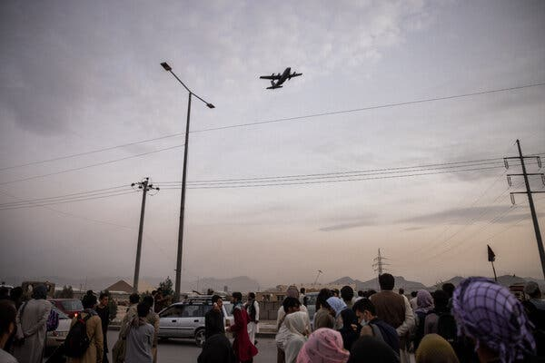
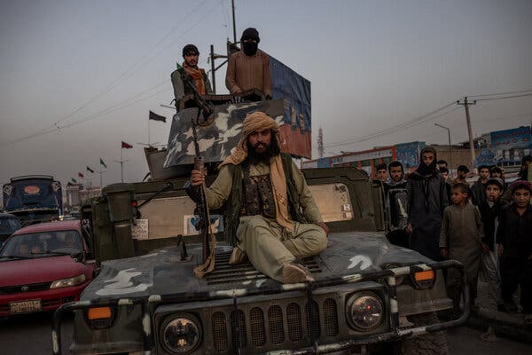

For much of the Afghanistan war, the only thing harder for the United States than winning was quitting.
The country’s longest war ended in chaos and defeat five years ago Sunday. Hundreds of thousands of Afghans, desperate to escape Taliban insurgents, swarmed the Kabul airport. Thirteen U.S. troops died there in a suicide bombing.
But since then, the fears that prevented three presidents from quitting the war have proven to be unfounded. Afghanistan has not become a terror haven or launchpad for attacks in the United States.
Today, the U.S. military is mired in a new war in Iran. Once again, the prospects for a military victory look bleak. Even President Trump has hinted that he would like to quit the war, only to reverse course and make a case for staying.
“We don’t have to be there,” he said in an Oval Office address in the spring. “We don’t need their oil. We don’t need anything they have. But we’re there to help our allies.”
The long war in Afghanistan raises hard questions for the generals and policymakers contemplating the way forward in Iran: Why was quitting in Afghanistan so hard? What does the long struggle to accept defeat there say about the Trump administration’s predicament in Iran?
The United States has faced questions about quitting in just about every war it has fought since its emergence as a global power after World War II. “So much of what we’ve been involved in these last several decades is really policing the empire,” said Andrew R. Hoehn, a senior analyst at RAND Corporation, a think tank that studies security matters.
In most instances, U.S. troops have gone to war to impose order on an unruly world, or to defend American values. “We’re not fighting existential conflicts,” Mr. Hoehn said.

The aftermath of Osama bin Laden’s death in May 2011 offered the best opportunity to leave Afghanistan. The perpetrator of the Sept. 11 terror attacks was dead, and a decade of drone strikes had decimated his organization. The Taliban insurgents, who had ruled Afghanistan and harbored Al Qaeda before the U.S. invasion, were proving almost impossible to eradicate.
“If American officials had known then what they know now, many of them — including me — would have argued more strongly for an early withdrawal,” Carter Malkasian, who advised U.S. commanders in Afghanistan, recently wrote in an essay in Foreign Affairs magazine.
Presidents and the Pentagon were motivated to keep fighting by concerns about the country’s credibility, a sense of obligation to trusted Afghan allies and a feeling that defeat would dishonor the sacrifices made by dead and wounded troops.
For many of these officers, who lost close friends in firefights with the Taliban, the idea of quitting ran counter to years of training and experience.
“Simply put, one reason the Americans did not leave Afghanistan earlier is that the U.S. military fights to win,” Mr. Malkasian wrote.
Political and foreign policy leaders fretted about U.S. credibility on the world stage and the costs that they could pay at the ballot box for losing a war.
By 2011, U.S. troop levels had already begun falling in Afghanistan, and the Taliban recognized that it just needed to outlast U.S. troops and the exhausted American public’s willingness to pay for the war.
As the prospect of defeating the Taliban grew more remote, U.S. political leaders shifted their goals. They focused on reducing casualties, cutting the war’s costs and keeping the corrupt and unpopular Afghan government alive.
“They’re like a doctor in a critical care ward that knows the patient is going to die,” said Rosemary Kelanic, the Middle East program director at Defense Priorities, which promotes a more modest U.S. foreign policy. “They’re just hoping the patient dies after their shift is over. They don’t want it to be on their watch.”
The war continued for another decade after bin Laden’s death, claiming the lives of another 868 service members. U.S. commanders who led troops in the war’s waning years sensed that they were being set up to fail. On a recent podcast, Gen. Austin S. Miller, the last commander in Afghanistan, recalled his mind-set when he was selected in 2018 for the job. He expected to emerge from his tour “very tired” and with a “diminished reputation.”
His situation, he joked darkly, was best summed up by song lyrics from the rock band Steely Dan: “I’m a fool to do your dirty work.”

Defense Secretary Pete Hegseth vowed earlier this year that the war in Iran would be nothing like the long wars in Afghanistan and Iraq. Mr. Hegseth had deployed to both conflicts as a young Army National Guard officer. The experience left him angry and disillusioned.
“Hear it from me, one of hundreds of thousands who fought in Iraq and Afghanistan, who watched previous foolish politicians like Bush, Obama and Biden squander American credibility,” Mr. Hegseth told reporters in March.
Those wars were quagmires, he said. The Iran war, he promised, would be different — “laser focused,” lethal, swift and “decisive.”
“This is not Iraq,” Mr. Hegseth insisted. “This is not endless.”
Iran responded to punishing attacks by closing the Strait of Hormuz. Earlier this summer, Gen. Dan Caine, the chairman of the Joint Chiefs of Staff, conceded that U.S. bombs and missiles likely would not be enough to defeat Iran or to even reopen the critical waterway to commercial traffic.
“Air power has got limits,” he said in Senate testimony, “and we always have to be mindful of those.”
Today the administration is betting that a U.S. Navy blockade of Iranian exports through the strait and economic sanctions will accomplish what the earlier airstrikes failed to do.
There are early signs of an uptick in the number of ships and oil exports transiting the strait.
Despite the modest gains, U.S. military leaders are no longer talking about a swift victory. Instead, they are describing a campaign that would squeeze Iran for months or longer.
Asked how long the Navy, already strained by long deployments, could sustain the blockade, Mr. Hegseth replied: “We can hold it as long as we need to — indefinitely.”
The challenge for the U.S. military resembles the one that it faced in Afghanistan. The Taliban insurgents were fighting for their survival. So too are Iran’s leaders.
For the United States, the stakes are much lower, and so too are the costs of quitting.
The U.S. military likely could open the Strait of Hormuz, which was open before the war started. “It is a doable task,” said Thomas G. Mahnken, who served as a senior Pentagon official under President George W. Bush. “But it would take some effort on the ground, just because the Iranians have spent decades building and fortifying positions.”
For now, the costs of such an operation in blood and treasure seem higher than Mr. Trump or the American people, who polls show oppose the war, are willing to bear.
Mr. Hegseth on Wednesday marked the five-year anniversary of the end of the Afghanistan war by presenting three retired Marines with upgraded awards for valor. Two of the three suffered severe shrapnel wounds in the suicide bombing at the Kabul airport.
Despite their injuries, they continued to help the wounded get to safety.
In his remarks, Mr. Hegseth praised their heroism. “When the wicked sought to sow terror, these men stood as lions at the gate — bold in their purpose, fierce in their resolve and unbreakable in their courage,” he said.
The ceremony also served a secondary purpose. It reframed the U.S. military’s loss in the long, unsatisfying Afghanistan war as a victory for the troops who deployed and fought.
“You are the vanguard of a lethal, proud and undefeated force,” Mr. Hegseth told the Marines. He awarded them their long-delayed medals.
No one mentioned the country’s defeat.